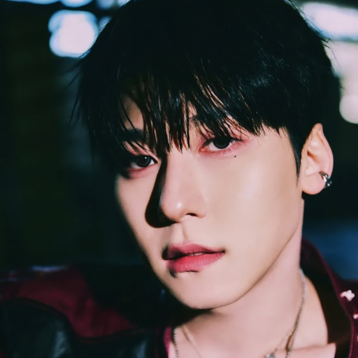
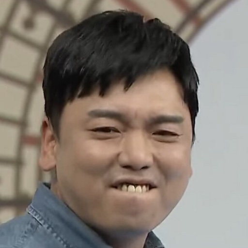
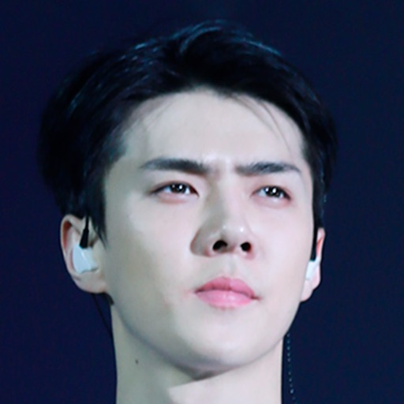
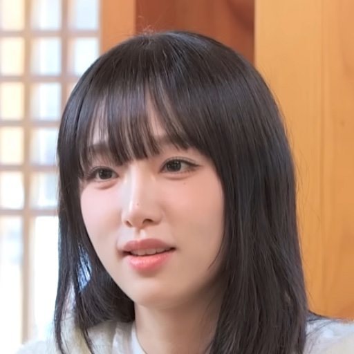
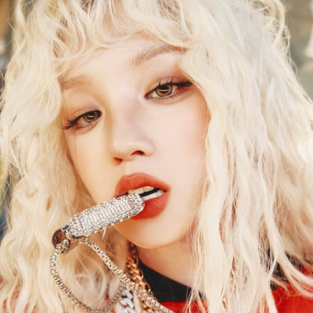

이미지 출처
하딜고고에 쓰인 이미지의 저작자와 이용 조건입니다.
셀럽 레시피 이미지
아래 이미지는 위키미디어 커먼즈의 크리에이티브 커먼즈 저작자표시(CC BY) 이미지입니다.
아바타로 쓰기 위해 정사각형으로 잘랐습니다.
-

-

-

-

-

레시피 이미지
레시피를 처음 공개한 분들의 저작물에서 가져왔으며, 출처는 레시피 이미지 왼쪽 아래에 기재하였습니다. 일부는 하딜고고가 직접 제작하였습니다.
출처 표기가 잘못되었거나 게재를 원하지 않으시면 알려 주세요.
메뉴 이미지
하이디라오 공식 사전주문 페이지의 메뉴 사진을 참고하여, 하딜고고가 AI 이미지 생성 도구 OpenAI Codex를 활용해 다시 그리고 편집한 일러스트입니다.
하이디라오가 제공하거나 승인한 이미지가 아니며, 실제 메뉴와 다를 수 있습니다.
아이콘
아래 아이콘은 무료로 공개된 것을 가져와 색과 크기만 고쳐 쓰고 있습니다.
그 밖의 이미지
배너·강아지(감자)·지점 스티커 등 그 밖의 이미지는 하딜고고가 직접 제작하였습니다.